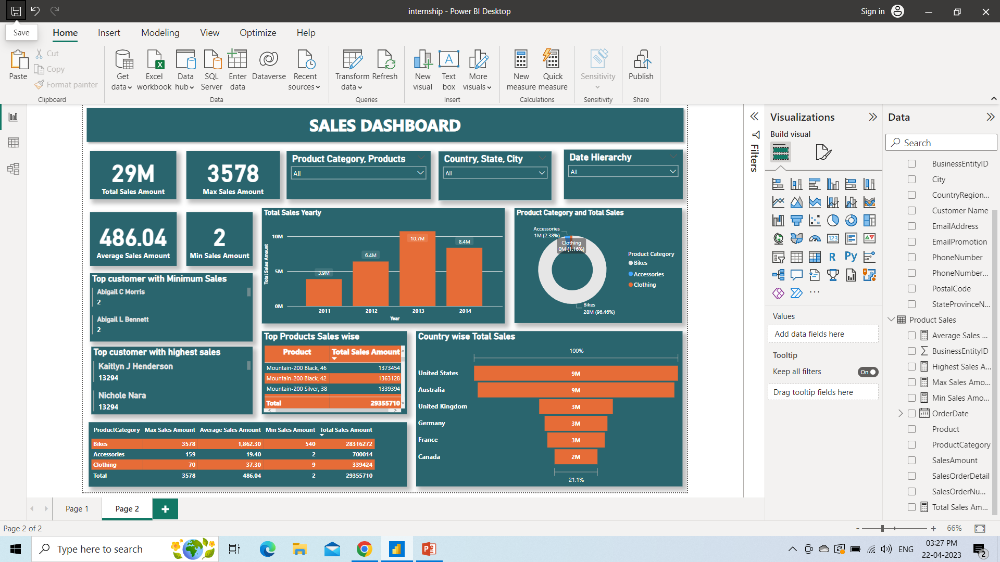
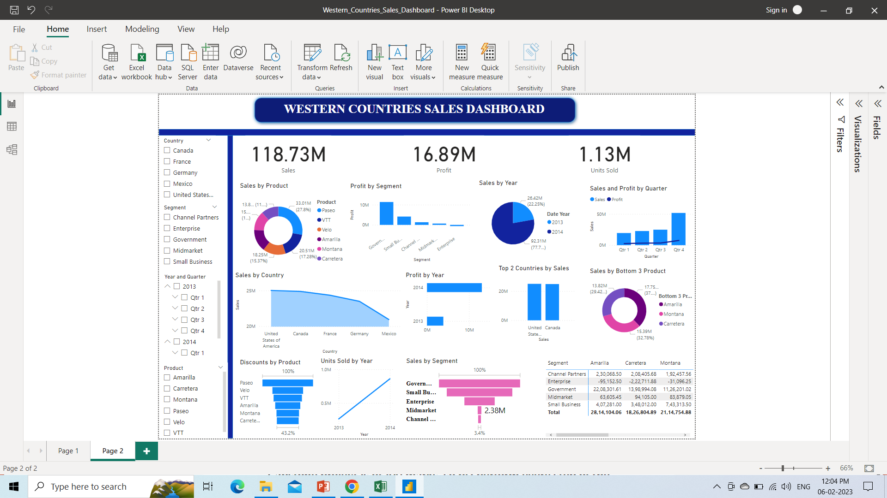

Hi! I’m Camellia
DATAANALYST
Download myRésumé ↗Goal
Turn data into understanding.
And understanding into better decisions.
01 / ABOUTA little context
Behind every number,
an opportunity.
I’m Camellia, a Data Analyst specializing in business intelligence, operational analytics, and decision support.
I work with Power BI, SQL, DAX, Power Query, Python, and enterprise data systems to build dashboards and data models across sales, customers, profitability, workforce, and operations.
With an M.S. in Applied Data Analytics and first-author published research in applied economics, I bring analytical rigor and a business perspective to the questions that matter.
My experience ↗10+
Dashboards & visual reports
20+
Microsoft Forms created
18%
Improvement in sales reporting
accuracy and consistency
M.S.
Applied Data Analytics
02 / SKILLSMy analytical toolkit
From raw data
to clear insight.
The tools and methods I use to connect business questions with useful answers.
Business
Data &
programming
Platforms &
engineering
Analytical
methods
03 / EXPERIENCEAnalytics in practice
Work that makes
a difference.
Data Analyst
Caramagno Foods Co.
- Designed and maintained Power BI analytics solutions across sales, customers, products, invoices, profitability, workforce productivity, and operational KPIs for leadership reporting.
- Queried, transformed, and modeled IBM i enterprise data using SQL, ODBC, Power Query, DAX, and relational data models.
- Developed DAX measures and dimensional models supporting MTD, YTD, YoY, rolling-period performance, customer activity, profitability, and invoice analysis.
- Partnered with operations, IT, and leadership to resolve data-quality issues and deliver analytics across customer retention, AR, inventory, logistics, profitability, and workforce efficiency.
Data Analyst Intern
Caramagno Foods Co.
- Created 10+ dashboards and visual reports and 20+ Microsoft Forms to improve CRM tracking, data collection, operational visibility, and stakeholder reporting.
- Analyzed routing, customer, sales, and operational data while collaborating with IT on dashboard requirements, automation, and data validation.
Jr. Business Analyst
Universal Stream Solution, Inc.
- Conducted statistical and exploratory analysis of product, sales, and customer data using Python, Power BI, and Excel.
- Developed KPI reporting and automated recurring analytical workflows, improving sales reporting accuracy and consistency by 18%.
- Translated quantitative findings into stakeholder recommendations supporting product, sales, and business strategy.
Operations Analyst
First Advantage Pvt. Ltd.
- Supported Infosys operations through data validation, quality reporting, compliance review, and operational process analysis.
- Analyzed operational datasets and feedback reports to identify quality issues and recommend workflow improvements.
Additional experience
FEB 2022 — APR 2022
Senior Customer Service Executive
Concentrix Daksh Services India Pvt. Ltd.
APR 2019 — JUN 2021
Business Development Executive / Business Analyst Support
Universal Stream Solution, Inc.
04 / PROJECTSQuestions, explored
A closer look
at the work.
Selected projects spanning business intelligence, predictive modeling, and relational database design.
01 / BUSINESS INTELLIGENCE
Sales & Customer
Intelligence
View presentation ↗
An end-to-end business intelligence project that transforms AdventureWorks transactional data into a sales analytics model and a four-page interactive Power BI report.
Explore revenue, estimated profitability, customer purchasing activity, product performance, and territory results.
Independent portfolio project using Microsoft AdventureWorks sample data.
View on GitHub02 / MACHINE LEARNING
Predictive Customer
Churn Modeling
View presentation ↗Explored customer churn using a Kaggle dataset in machine learning coursework. The presentation outlines the analytical approach and its relevance to retention decisions.
Explore the approach +
This coursework overview discusses data preparation, feature analysis, and model evaluation. Illustrative methods are labeled, and unverified model results are excluded.
03 / SQL & DATA MODELING
Food Redistribution
Database Design
View presentation ↗Designed a normalized relational database using ER modeling and SQL queries to improve tracking and reporting.
Explore the approach +
The project uses entity–relationship modeling, normalization, and SQL queries to organize food redistribution data for more consistent tracking and reporting.

04 / BUSINESS INTELLIGENCE COURSEWORK
Customer & Product Sales Analysis
Combined JSON datasets, cleaned customer records, and built sales measures and interactive comparisons by year, product, country, and customer.
Explore project & original presentation ↗
05 / BUSINESS INTELLIGENCE COURSEWORK
Western Countries Financial Analysis
Used Excel, SQL, and Power BI to investigate sales, profit, discounts, and country performance, with a dashboard for comparing products and segments.
Explore project & original presentation ↗05 / RESEARCHPublished perspective
FIRST AUTHOR · 2026The economic
The economic
impact of tariffs.
The Economic Impact of Tariffs on U.S. Businesses: Prices, Trade, and Investment
Journal of Applied Business and Economics
Vol. 28, No. 4 · 2026
Applied ARDL, ECM, VAR, IRF, stationarity testing, and time-series modeling to analyze tariff effects on prices, trade, uncertainty, and private investment using BEA, BLS, and FRED data.
Read the publication ↗06 / EDUCATIONThe foundation
Always learning.
M.S. in Applied
Data Analytics
University of Detroit Mercy
B.Com. in Economics
Minor in Business Administration
Deen Dayal Upadhyaya Gorakhpur University
07 / CONTACTLet’s start a conversation
Good questions.
Better possibilities.
Let’s talk about data, business intelligence,
and the next opportunity to make an impact.
LinkedIn ↗Detroit, Michigan